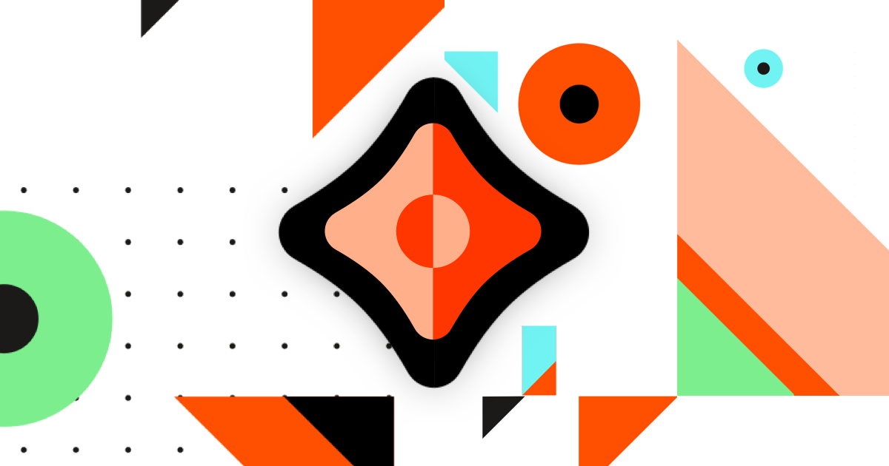

Project status: Clay testnet is now live.Clay is a decentralized public network ready for experimental application development and testing, but you still may encounter a few issues. It is the last major milestone before Fire mainnet, which is under development and will launch in late Q1 2021. Documents published on Clay will not be portable to Fire. Please reach out on Discord or create an issue on Githb to report any issues.
Quick start¶
Learn the basics by setting up and interacting with the Ceramic CLI. This tutorial serves as a simple introduction to Ceramic concepts. See installation to fully configure your client and start building applications.
Prerequisites¶
This quick start guide will use a terminal, Node.js, and npm. Make sure to have these installed on your machine.
Install the CLI¶
Install the Ceramic CLI using your terminal.
npm install -g @ceramicnetwork/cli
Start the daemon¶
Start a Ceramic daemon on your local machine and automatically connect to it on
port 7007, http://localhost:7007.
ceramic daemon
Node configurations
There are multiple options you can configure when you start the ceramic daemon.
- Network: By default the CLI starts a Ceramic node on the
claytestnet. If you would like to use a different Ceramic network, you can specify this with the--networkoption. - Additional configurations: Use the
ceramic daemon -hcommand to see additional options.
Authentication¶
By default, the Ceramic CLI is authenticated with a
Key DID. The seed
for this DID is stored in ~/.ceramic/config.json. If this file is not present
on startup a new DID will be randomly generated. It's currently not possible to
use the Ceramic CLI with other DID methods.
Create a document¶
Use the create command to create a new document. In the example below
we create a document using the tile doctype.
$ ceramic create tile --content '{ "Foo": "Bar" }'
DocID(kjzl6cwe1jw14a80400xpbj97sutzdssg9rklbyykj0zdxzbpmww4x9e9w4vcyr)
{
"Foo": "Bar"
}
The first line of the output is the DocID, which is the persistent identifier of our newly created document. This DocID will be different for you, since you created it with your DID. Below the DocID is the current content of the document.
More options
--controllers: set the controller of the document--schema: set the schema of the document- Run
ceramic create -hto see all available options
Query a document¶
Use the show command to query the current state of a document. You will need to provide its DocID.
$ ceramic show kjzl6cwe1jw14a80400xpbj97sutzdssg9rklbyykj0zdxzbpmww4x9e9w4vcyr
You should use your DocID instead of the DocID included here.
{
"Foo": "Bar"
}
Use the state command to query the entire state of a document.
$ ceramic state kjzl6cwe1jw14a80400xpbj97sutzdssg9rklbyykj0zdxzbpmww4x9e9w4vcyr
You should use your DocID instead of the DocID included here.
{
"doctype": "tile",
"content": {
"Foo": "Bar"
},
"metadata": {
"schema": null,
"controllers": [
"did:key:z6MkfZ6S4NVVTEuts8o5xFzRMR8eC6Y1bngoBQNnXiCvhH8H"
]
},
"signature": 2,
"anchorStatus": "PENDING",
"log": [
{
"cid": "bagcqceray2cbrwx45oa5nesee4s4cggkodmsttzuqfzh32yat3o26iw5m5rq",
"type": 0
}
],
"anchorScheduledFor": "1/11/2021, 11:45:00 AM"
}
Here we can see various information about the document such as content, controllers, and schema. In your output you should see your DID as the controller, instead of the DID we show here. We can also see the current anchorStatus of our document, and that it has been scheduled to be anchored at 11:45 on the 11th of January 2021. Once this anchor is finalized, the state of the document will automatically be updated with a new entry in the log and anchorStatus will be set to ANCHORED.
Update a document¶
Use the change command to update a document. Your DID must be the controller of the document in order to update it.
$ ceramic change kjzl6cwe1jw145dqtpe73w2sfbn6gz8d0fdvn0etrnflpdyqryltfyem4u1vkok --content '{
"title": "My updated document"
}'
You should use your DocID instead of the DocID included here.
{
"title": "My updated document"
}
More options
Currently you can change content, controllers, and schema using the CLI. Run ceramic change -h for more information.
Create a schema¶
In Ceramic you can enforce that documents adhere to a specified schema. The schemas themselves are Ceramic documents where the content is a json-schema. For example we can create a schema that requires a document to have a title and message.
$ ceramic create tile --content ' {
"$schema": "http://json-schema.org/draft-07/schema#",
"title": "Reward",
"type": "object",
"properties": {
"title": { "type": "string" },
"message": { "type": "string" }
},
"required": [
"message",
"title"
]
}'
DocID(kjzl6cwe1jw1472as4pj3b3ahqmkokbmwc7jchqcob6pcixcoo4kxq6ls8uuxgb)
{
"type": "object",
"title": "Reward",
"$schema": "http://json-schema.org/draft-07/schema#",
"required": [
"message",
"title"
],
"properties": {
"title": {
"type": "string"
},
"message": {
"type": "string"
}
}
}
Create a document that uses a schema¶
First, use the commits command to list the commitIDs contained in the schema document. When creating a document that uses this schema, we need to use a commitID instead of the DocID to enforce that we are using a specific version of the schema since the schema document is mutable and can be updated.
$ ceramic commits kjzl6cwe1jw1472as4pj3b3ahqmkokbmwc7jchqcob6pcixcoo4kxq6ls8uuxgb
You should use your DocID instead of the DocID included here.
[
"k3y52l7qbv1frxu8co1hjrivem5cj2oiqtytlku3e4vjo92l67fkkvu6ywuzfxvy8"
]
If a document contains multiple commits and you're not sure which one you want, use the show command to show the content of the document at the given commit.
Once you retrieve the desired commit, you can now create a document that is enforced to conform to this version of the schema. Use the create command and pass the --schema option along with your commitID.
$ ceramic ceramic create tile --content '{
"title": "My first document with schema",
"message": "Hello World"
}' --schema k3y52l7qbv1frxu8co1hjrivem5cj2oiqtytlku3e4vjo92l67fkkvu6ywuzfxvy8
You should use your commitID instead of the commitID included here.
DocID(kjzl6cwe1jw149tvfh6otqfzd2hfknkifb1z2lakozkicvau0xldzzdzwfbsztj)
{
"title": "My first document with schema",
"message": "Hello World"
}
Query the document you created¶
Use the state command to query the state of the document we just created. We can see that the schema is set to the correct commitID.
$ ceramic state kjzl6cwe1jw14b5sr79heovz7fziz4dxcn8upx3bcesriloqcui137k6rq6g2mn
You should use your DocID instead of the DocID included here.
{
"doctype": "tile",
"content": {
"title": "My first document with schema",
"message": "Hello World"
},
"metadata": {
"schema": "k3y52l7qbv1frxu8co1hjrivem5cj2oiqtytlku3e4vjo92l67fkkvu6ywuzfxvy8",
"controllers": [
"did:key:z6MkfZ6S4NVVTEuts8o5xFzRMR8eC6Y1bngoBQNnXiCvhH8H"
]
},
"signature": 2,
"anchorStatus": "PENDING",
"log": [
{
"cid": "bagcqcera5qxg5zabjjvwpcbia6c3t6vebgo4brgmsagxezdjgk4vxnzwb5hq",
"type": 0
}
],
"anchorScheduledFor": "1/13/2021, 1:45:00 PM"
}
That's it!¶
Congratulations on completing this tutorial! You're well on your way to becoming a Ceramic developer. Now let's install Ceramic in your project →